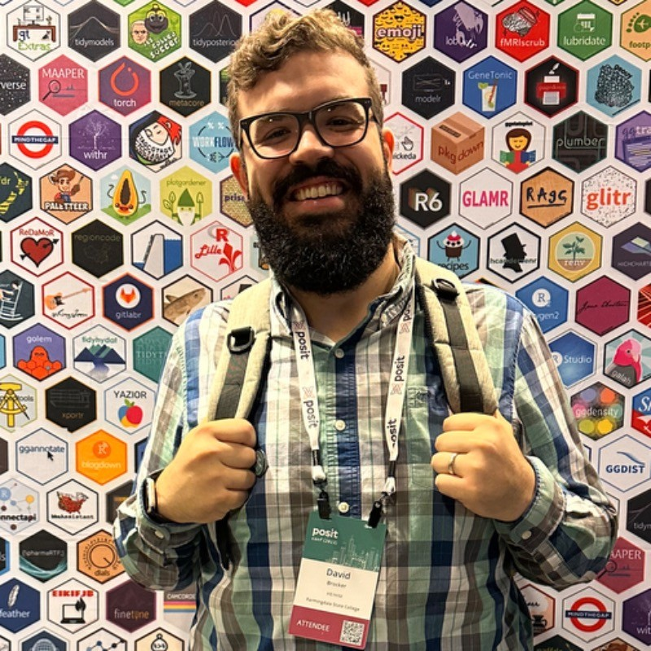
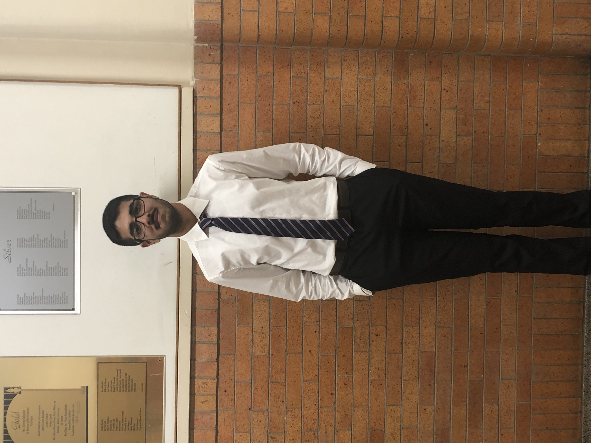

Lab Wesbite
Lab Directors
Kathryn M. Hauschild Ph.D
Dr. Kathryn M. Hauschild is a developmental psychologist by training with expertise in early cognitive development and autism spectrum disorder. Her research work bridges the areas of developmental, cognitive, and clinical psychology to better understand how individuals gain and categorize knowledge about the people and objects in their everyday environment. This work serves her overarching goal of contributing to theoretical frameworks that account for the shared relationship between core cognitive competencies such as face perception, category knowledge, and language acquisition, which together support successful social information processing.
Dave Brocker

Bio:
I am also here.
Research Assistants
Hardeep Singh

Bio:
Hardeep is an undergraduate student at Farmingdale State College majoring in applied psychology and minoring in sociology. He is interested in working with children in a clinical setting. He has worked with children ranging from 3-13 years old in elementary school and at summer camps. He aims to attain a Ph.D. in clinical psychology with a developmental focus.
Julia Wygand
Bio:
Julia is an undergraduate applied psychology major. She aims to pursue her doctorate in Clinical Psychology and work in academia as a professor. Her research interests center on mental health disorders including personality disorders and paraphilic disorders.
Terri Payne
Bio:
Terri received her B.S. in Applied Psychology with a concentration in Industrial/Organizational Psychology in 2024. As a non-traditional student her current aim is to pivot from a career in software implementation to Human Resources. Terri has an interest in workplace motivation, self-control, person perception and data analysis. She will pursue graduate studies with a double-major in Human Resources Management and Psychology, and her long-term doctoral interests include Organizational Behavior and Integrative Neuroscience. She aspires to be an advocate for employee well-being and professional development.